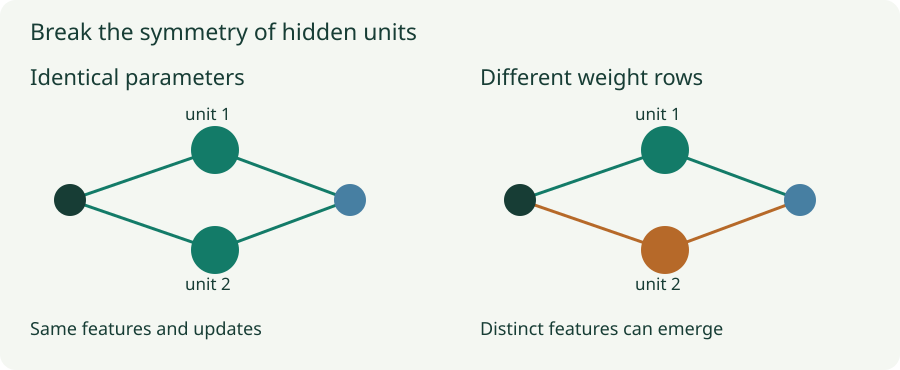

Initialization: Break Symmetry and Keep Signals Alive
See why identical hidden units stay identical, then track how weight scale compounds through depth.
Initialization has two jobs before learning begins: give hidden units a chance to become different features, and keep signals and derivatives at usable scales. “Use small random weights” addresses only part of the first job. A scale that seems small in one layer can vanish or explode after repeated multiplication through depth.
1. Why identical hidden units can stay identical
Consider $f(x)=v_1\phi(u_1^Tx+b_1)+v_2\phi(u_2^Tx+b_2)$. If $u_1=u_2$, $b_1=b_2$, and $v_1=v_2$, the two hidden units have identical forward values. If $\delta=\partial\ell/\partial f$, their incoming-weight gradients are
Every factor is equal for the two units, so their updates are equal. Their outgoing-weight gradients are also equal because the hidden activations are equal. Under identical deterministic updates, the equality persists. Two copies do not become two different learned features merely because there are two slots in the tensor.
The outgoing weights matter in this argument. Identical incoming weights with unequal outgoing weights can receive different incoming gradients. Randomly initializing weight matrices breaks the full permutation symmetry reliably; the claim is not that every possible pair of identical numbers anywhere in a network causes failure.

2. Which zero initializations are harmless?
Initializing ordinary hidden-layer biases to zero is usually compatible with learning when the associated weight rows already differ. Initializing all hidden weights to zero is different: it can preserve symmetry and block gradients through products of zero weights. An output bias may still learn, so “all gradients are always zero” is too strong.
A linear model has no interchangeable hidden features to diversify and can often start at zero. A residual branch can also deliberately end in a zero-initialized projection, while other branch weights are random. That construction initially preserves a shortcut and has its own gradient logic, developed in the final chapter. Judge zeros by their role in the computation, not by a universal prohibition.
3. A layer’s scale depends on how many inputs it sums
For one preactivation $z=\sum_{j=1}^{n_{\rm in}}W_ja_j$, suppose the weights are independent, zero mean, have variance $s_W^2$, and are independent of the incoming activations at initialization. Cross terms vanish in the expectation over weights. If incoming activations share second moment $q=\mathbb E[a_j^2]$, then
Each term contributes $s_W^2q$, and there are $n_{\rm in}$ terms. The expression uses the activation’s second moment, which equals its variance plus its squared mean. After ReLU, activations are not zero mean, so silently replacing the second moment by variance changes the calculation.
For a linear width-100 layer, weight standard deviation $0.1$ gives $n_{\rm in}s_W^2=1$. Standard deviation $0.01$ gives a factor $0.01$ in the output second moment. The latter can be far too small despite sounding like a cautious initialization.
4. Small mismatches compound
For an equal-width linear chain with the same expected multiplier $c=ns_W^2$ at each layer, the approximation gives $q_L=c^Lq_0$. If $c=0.8$, then after 20 layers only about $1.15\%$ of the initial second moment remains. If $c=1.2$, the factor is about $38.3$.
Nonlinear activations change this recurrence. Tanh can saturate near $-1$ or $1$, where its derivative is small even though its output is bounded. ReLU removes the negative part of a symmetric preactivation distribution, changing the second moment. Later chapters derive the appropriate scaling for these activations.
5. Forward signals and backward gradients are separate checks
If $g_l=\partial\ell/\partial h_l$, the chain rule through $h_l=\phi(W_lh_{l-1})$ gives
For a linear layer, a rough independence calculation makes each incoming gradient coordinate’s second moment scale by $n_{\rm out}s_W^2$, because it sums over output units. Forward propagation counts inputs; backward propagation counts outputs. When widths differ, one variance generally cannot preserve both per-coordinate scales exactly.
More generally the full input–output Jacobian is a product of weight matrices and activation-derivative matrices. Average scale alone does not reveal whether particular directions vanish or explode. This is why a good activation variance is useful evidence, but not a complete diagnosis of trainability.
6. Lab: measure a sampled network before training
Follow values forward and derivatives backward
Each layer has width 32 and zero bias. Weight entries are Gaussian with standard deviation $g/\sqrt{32}$. The experiment propagates 48 independent Gaussian input vectors, then backpropagates independent Gaussian output directions through the same sampled network. No optimizer steps are taken.
The chart uses base-10 logarithms: 0 means a second moment of 1, $-3$ means $0.001$, and 3 means 1,000. Values below $10^{-14}$ share the plotting floor; the readouts retain the measured values. Forward measurements average over examples and units. The backward curve uses the same layer index, but information flows from the final layer toward the input.
Compare linear, tanh, and ReLU with the same gain. Then resample weights. Expect fluctuations in a finite network; an initialization formula describes a distribution, not an exact equality for every draw. The output directions here are a Jacobian probe, not gradients from a trained task loss.
7. A useful initialization inspection
Run a representative batch through the untrained model. Inspect per-layer activation means, second moments, zero fractions, saturation, gradient magnitudes, and output logits. Confirm that the first loss is finite and that intended trainable parameters receive gradients. Check several seeds when behavior is unstable.
Input scaling, normalization, residual additions, attention operations, and tied weights can invalidate a layer-only heuristic. Initialization cannot fix mislabeled data, a wrong loss, or an excessive learning rate. It provides a sensible starting distribution for the actual architecture and training procedure.
Questions with answers
Different weight rows already give units different computations and gradients. Equal biases alone do not force complete hidden-unit symmetry.
No. Tanh can remain bounded while saturating, making its derivatives—and products of those derivatives—very small.
No. Some singular directions can shrink while others grow. The average can hide both effects.
Sources
Glorot and Bengio, Understanding the Difficulty of Training Deep Feedforward Neural Networks; He et al., Delving Deep into Rectifiers; Saxe et al., Deep Linear Network Dynamics. The sampled network experiment and symmetry calculation are constructed for this series.